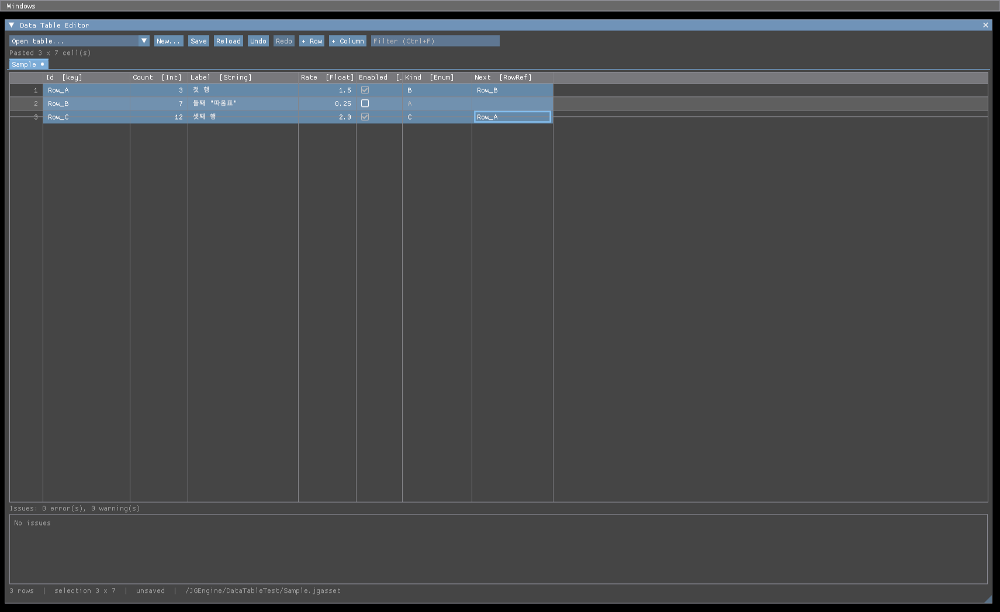
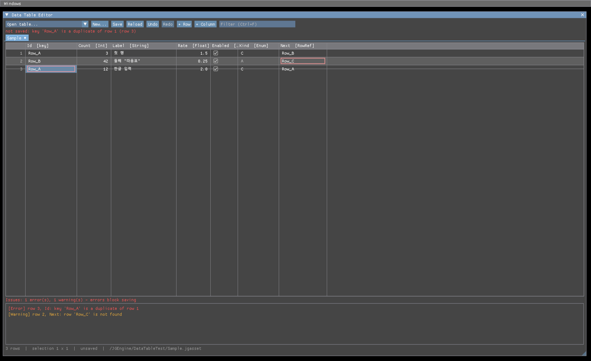
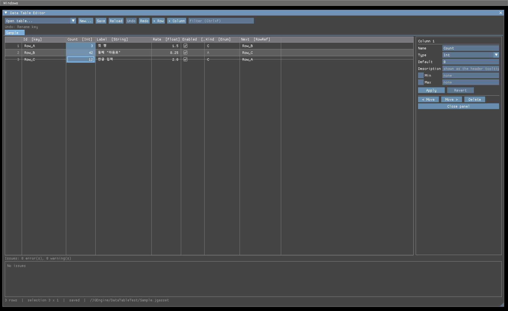
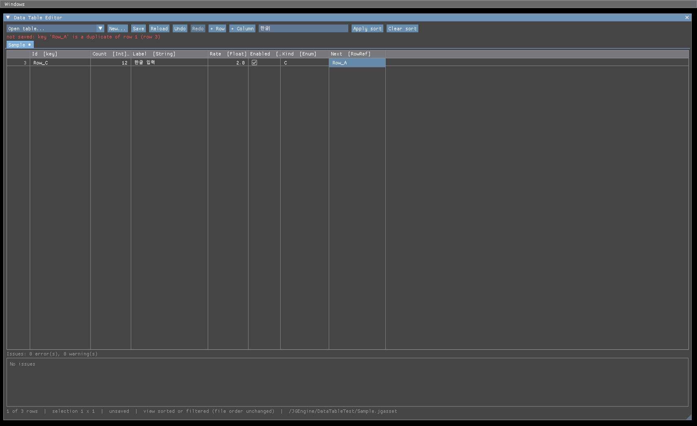
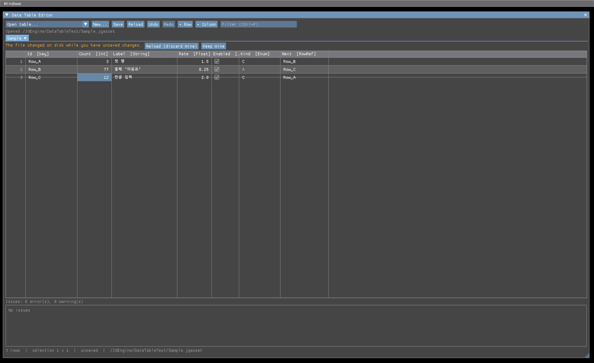
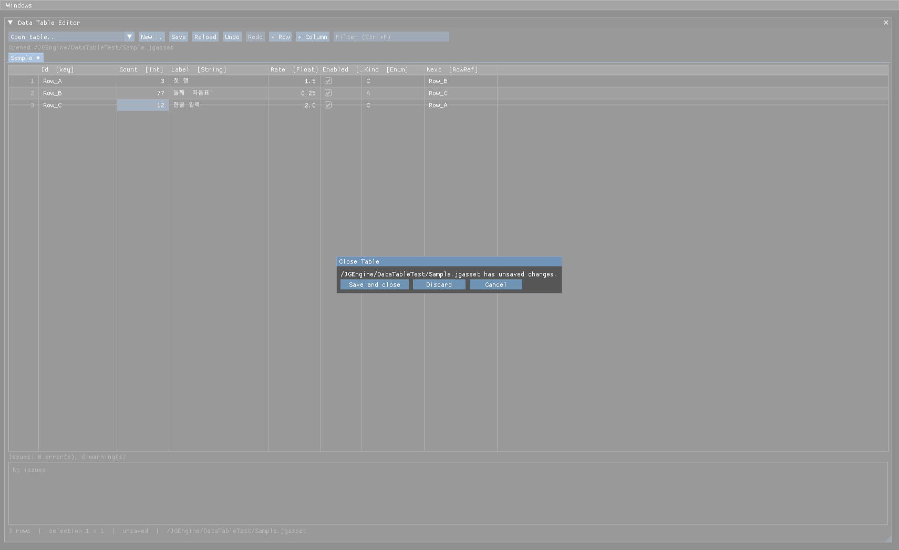

데이터 테이블
요약. 행(고유 키) × 열(타입이 있는 값) 데이터를 새 에셋 JGDataTable로 만들었습니다. 파일은 기존 .jgasset이고 내용은 JSON입니다. 열 정의도 같은 파일에 있어서, 에디터는 게임 코드 없이 테이블을 열고 열을 추가하고 셀을 고칩니다. 코드는 정하신 대로 GameFrameWorks Data/에 있습니다.
에디터에는 메뉴 Windows/Data Table Editor로 여는 창이 생겼습니다. 셀 선택, 키보드 이동, 바로 입력, 범위 선택, 엑셀·구글 시트와 복사/붙여넣기, 실행 취소, 정렬과 필터, 저장, 바깥 수정 감지를 합니다. 한글이 보이도록 에디터 글꼴에 한글을 합쳤습니다.
메인 트리에 반영해 전체 빌드와 회귀를 마쳤고, 커밋은 하지 않았습니다. 커밋할 파일 목록은 아래에 있습니다.
datatable.selftest실제 화면
엔진 에디터에서 찍은 화면입니다. 그림을 누르면 원본 크기로 열립니다.


TRUE/FALSE, 빈 칸)을 키 열부터 붙여 넣어 행이 만들어졌습니다. 기본값과 같은 칸은 흐리게 보입니다.









그 밖의 캡처: 행 참조 고르기 목록 · 열 머리 메뉴 · 칸 메뉴 · 타입 바꾸기 결과. 화면 글은 영어입니다(콘솔과 같은 규칙, 한글 글꼴 범위 밖 기호가 깨지지 않게).


결정과 반영
| ID | 결정 | 정하신 것 | 반영 |
|---|---|---|---|
| DT-D1 | 스키마(열 정의) 위치 | 에셋 안 + C++ 바인딩 검사 | 열은 테이블 파일에, 게임 코드는 HDataTableView<T>로 필요한 열만 묶고 묶을 때 이름 · 타입을 검사합니다 |
| DT-D2 | 파일 형식 | .jgasset (내용 JSON) | 기존 에셋 로드 · GUID · /JGEngine/ · /JGGame/ 경로를 그대로 씁니다 |
| DT-D3 | 코드 위치 | GameFrameWorks (권고는 Asset) | Source/Runtime/GameFrameWorks/Data/. 덕분에 JGConsole에서 셀프 테스트를 바로 돌립니다. Asset 모듈은 고치지 않았습니다 |
| DT-D4 | 1단계 열 타입 | 7개로 시작 | Bool · Int · Float · String · Enum · AssetRef · RowRef. "나중에 리플렉션으로 struct도"는 보류 DT-H1에 적었고, 파일 형식 버전 · 타입 목록은 구조체 타입을 더할 수 있게 뒀습니다 |
| DT-D5 | 에디터 한글 글꼴 | 포함 | 에디터 기본 글꼴에 한글을 합쳤습니다(엔진 Content 글꼴이 있으면 그것, 없으면 맑은 고딕) |
| DT-D6 | 착수 범위 | DT-0 ~ DT-4 전부 | 선행 → 런타임 → 편집 모델 → 에디터 → 검증까지 끝냈습니다 |
만든 것
JGDataTableEditor) — 탭, 도구 막대(열기 · 새로 · 저장 · 다시 읽기 · 실행 취소 · 행/열 추가 · 필터), 열 속성 패널, 문제 목록, 상태 줄, 새 테이블 · 닫기 확인 대화상자. 메뉴 Windows/Data Table EditorPGUIGrid — 데이터를 모르는 스프레드시트 컨트롤(행 번호 · 키 열 고정, 보이는 행만 그림, 사각 선택, 키보드, 글 · 체크 · 고르기 편집기). HGUI 래퍼 13개, 에디터 한글 글꼴JGDataTable 에셋, 값 · 스키마, 검증, HDataTableView<T>. 편집 모델: PDataTableDocument(편집 10종 · 실행 취소 500 · 저장 · 다시 읽기 · 바뀐 파일 감지), TSV 클립보드. 콘솔 명령 datatable.selftest · datatable.validate검증 결과
| 단계 | 결과 |
|---|---|
| 헤드리스 | 127/127 값 · JSON 왕복(다시 저장 바이트 동일), BOM, 파싱 오류 위치, 키 오류, 참조 검사, 바인딩 성공 · 실패, 무작위 편집 → 전부 되돌리면 원본 바이트, 엑셀 형식 TSV, 붙여넣기 규칙, 지문, 1만 행 |
| 에디터 실제 입력 | 통과 새 테이블 → 열 추가 → 저장 → 바깥 수정 자동 다시 읽기 → 재시작 뒤 열기 → 행 추가 → 엑셀 형식 붙여넣기 → 바로 입력 · 한글 글자 · 체크 · 고르기 목록 → 중복 키 오류로 저장 막힘 → 실행 취소 / 다시 → 정렬 · 한글 필터 → 범위 복사(TSV) → 저장 파일 확인 → 재시작 뒤 값 유지 → 열 타입 바꾸기 · 되돌리기 → 닫기 확인 → 저장 안 된 상태의 바깥 수정 알림 → 행 복제 · 삭제. 로그 오류 0 |
| 검증 중 고친 것 | 실행 취소로 문제가 풀린 뒤에도 빨간 실패 문구가 남던 것, 탭이 없을 때 상태 문구가 도구 막대 줄에 붙던 것, 탭 닫기 · 행 복제의 상태 문구 |
| 메인 트리 | 통과 PreBuild → 솔루션 전체 빌드(14 프로젝트, 경고는 기존 링커 경고 2건뿐) → 셀프 테스트 127/127 · 게임 UI 193/193 · 콘솔 64/64 · gmtest · net.test all → 에디터 실행, 메뉴로 창 열림, 종료 코드 0 |
측정
| 항목 | 값 |
|---|---|
| 한글 글꼴 아틀라스 | 512×256(0.5 MB) → 1024×2048(8 MB), 시작 때 한 번 약 124 ms 더 듭니다 |
| 1만 행 · 편집 하나 | 보기 · 검증 다시 계산 47~66 ms |
| 1만 행 · 필터 글자 하나 | 131~258 ms (모든 칸 글을 다시 만듭니다) |
| 1만 행 · 정렬 | 90 ms |
| 1만 행 · 가만히 | 110 fps (보이는 행만 그립니다) |
| 1만 행 헤드리스 | 쓰기 869 ms · 읽기 795 ms · 검증 56 ms · 바인드 82 ms |
모두 엔진 개발 구성(DevelopEngine) 기준입니다. 측정용 코드는 측정 뒤 지웠습니다.
게임 코드에서 쓰는 법
- 에디터
Windows/Data Table Editor→New...→ Content(/JGGame/) · 경로(Data/Items, 영문) · 키 열 이름 →Create + Column으로 열을 만들고, 열 머리를 눌러 타입 · 기본값 · 범위를 정합니다. 행은+ Row, 칸 메뉴, 엑셀에서 복사한 블록 붙여넣기Ctrl+S저장(빈 키 · 중복 키가 있으면 막힘)- 게임 모듈
module.json의존에Asset을 더하고(게임 템플릿 기본은 Core · GameFrameWorks뿐), 필요한 열만 묶습니다:
struct HItemRow
{
int32 Count = 0;
PString Label;
HAssetPath Mesh;
PName Next;
static void BindColumns(HDataTableRowBinder<HItemRow>& binder)
{
binder.Bind("Count", &HItemRow::Count);
binder.Bind("Label", &HItemRow::Label);
binder.Bind("Mesh", &HItemRow::Mesh);
binder.Bind("Next", &HItemRow::Next);
}
};
POnLoadCompelete onLoaded;
onLoaded.BindLambda([this](PWeakPtr<JGAsset> inAsset)
{
PSharedPtr<JGDataTable> table = Cast<JGDataTable>(inAsset.Pin());
HList<HDataTableIssue> issues;
if (table == nullptr || _items.Bind(table, &issues) == false)
{
return; // 열 없음 · 타입 불일치 → issues 와 로그에 어느 열인지
}
});
GAssetDatabase::GetInstance().LoadAssetAsync(HAssetPath("/JGGame/Data/Items.jgasset"), onLoaded);
const HItemRow* row = _items.Find(PName("Row_A")); // 키 색인. 순회는 늘 파일의 행 순서에디터에서 저장하면 테이블의 OnChanged가 불리니 그때 다시 Bind합니다. 파일만 검사하려면 JGConsole.exe datatable.validate(경로 없이 = 모든 테이블). 자세한 규칙은 설계 문서 §15.
설계와 달라진 점
| 설계 | 실제 | 이유 |
|---|---|---|
Asset 모듈 DataTable/ | GameFrameWorks Data/ | 결정 DT-D3. 콘솔 프로그램 의존을 바꿀 필요가 없어졌습니다 |
| 에셋 DB에 타입별 목록 · 기다리기 도우미 추가 | 에셋 DB는 그대로 | GFW 쪽에서 로드된 목록을 읽기만 합니다. 기다리기 도우미는 쓰는 곳이 없어 만들지 않았습니다 |
| 고정 열 = 키 열 | 행 번호 + 키 열 | 정렬 · 필터 중에도 파일의 행 번호가 보여야 해서 |
탭 이름 뒤 * | 탭 이름 옆 점 | ImGui 문서 탭의 표준 표시 |
| — | 정렬 · 필터 중에는 행 이동 막음 | 보기 순서와 파일 순서가 다를 때 "위로"의 뜻이 모호해서 |
확인하지 못한 것 · 남은 것
- 커밋 하지 않았습니다(DT-C1). 파일 목록
- 손 확인 에디터 검증은 창에 입력 메시지를 보내는 방식이라, 실제 마우스 · 키보드 · 한글 입력기 조합은 직접 확인하지 못했습니다. 한글은 확정된 글자 입력까지만 봤습니다
- 게임 프로젝트
/JGGame/테이블을 게임 프로젝트 에디터에서 만들고 묶는 것은 하지 않았습니다(엔진 에디터의/JGEngine/로 검증) - 알아 둘 것 앱을 닫을 때는 저장 안 된 변경을 묻지 않습니다(엔진에 닫기 가로채기 훅이 없음, 보류 DT-H9). 창 X로 닫는 것은 괜찮습니다 — 탭과 변경이 남아 있다가 다시 열면 보입니다
보류 (조건이 오면)
| ID | 항목 | 다시 볼 조건 |
|---|---|---|
| DT-H1 | struct 열 (말씀하신 희망) — 리플렉션으로 구조체를 셀 하나에. 헤더 도구의 JGSTRUCT 지원과 타입 없는 값 읽기 · 쓰기가 먼저입니다 | 착수를 정하실 때 |
| DT-H9 | 앱 종료 때 저장 안 된 변경 확인 · 복구 파일 | 변경을 잃는 일이 실제로 생길 때 |
| DT-H11 | 열린 탭을 레이아웃과 함께 복원(지금은 창만 복원) | 재시작마다 다시 여는 게 불편할 때 |
| DT-H14 | 한글 글꼴 범위 줄이기(8 MB → 약 1/4) · 열 폭 저장 | 에디터 메모리 · 시작 시간이 문제 될 때 |
| DT-H15 | 큰 테이블 필터 입력 속도 | 수만 행 테이블이 생길 때 |
그 밖에 행 상속, 여러 파일 분할, C++ 코드 생성, CSV 가져오기 · 내보내기, 키 바꾸기 시 참조 함께 고치기, 네트워크 지문 연결, 실행 중 게임 즉시 반영, 지역화 테이블, IME 조합 시작 편집, 정렬 뒤 선택 유지 — 전체 목록과 조건은 TODO 보류 표(DT-H1~H15)에 있습니다.
커밋할 파일
- 새 파일:
Source/Runtime/GameFrameWorks/Data/18개,Source/Runtime/GUI/Grid/GUIGrid.h/.cpp,Source/Editor/JGEditor/Widgets/DataTableEditor.h/.cpp, 증적 · 캡처 · 도구(Document/Memory/Etc/Files/2026-10-01_datatable_*,Files/tools/datatable_*) - 수정: Core
Json.h/.cpp·FileHelper.h/.cpp·ObjectGlobalSystem.h, GUIGUI.h/.cpp·DX12GUIBackend.cpp,JGEditor.cpp, 다시 빌드된Bin/DevelopEngine(Core 헤더가 바뀌어 거의 전부), 문서 - 넣지 않는 것: 테스트용 입력 훅 · 테스트 테이블 · 측정 코드는 메인 트리에 없습니다. 에디터 레이아웃 파일
imgui.ini는 실행 전 상태로 되돌렸습니다
정확한 목록은 Document/Memory/Etc/TODO_DataTable.md 커밋 체크리스트에 있습니다.
설계 상세 (오전 보고 내용)
파일 형식
"JGDataTable": {
"FormatVersion": 1,
"KeyColumn": "Id",
"Columns": [
{ "Name": "Count", "Type": "Int", "Default": 0, "Min": 0 },
{ "Name": "Rate", "Type": "Float", "Default": 1.0 },
{ "Name": "Kind", "Type": "Enum", "EnumValues": [ "A", "B", "C" ], "Default": "A" },
{ "Name": "Mesh", "Type": "AssetRef", "AssetClass": "JGStaticMesh", "Default": "" },
{ "Name": "Next", "Type": "RowRef", "Table": "/JGGame/Data/OtherTable", "Default": "" }
],
"Rows": [
{ "Id": "Row_A", "Count": 3, "Rate": 1.5, "Kind": "B", "Mesh": "/JGGame/Meshes/Box", "Next": "Row_X" }
]
}- 행은 열 이름을 키로 한 객체이고 모든 칸을 적습니다. 실제 저장은 값마다 한 줄이라 칸 하나를 고치면 diff도 한 줄입니다. 같은 내용이면 다시 저장해도 바이트가 같습니다.
- 행 순서 = 파일 순서 = 런타임 순회 순서입니다. "정렬을 행 순서로 적용" 명령만 순서를 바꿉니다.
- UTF-8(읽을 때 BOM은 건너뜀), 파일 이름은 ASCII. 저장은 임시 파일에 쓴 뒤 교체합니다.
열 타입 7개
| 타입 | 값 | C++에서 받는 타입 | 검사 |
|---|---|---|---|
| Bool | true / false (엑셀 TRUE/FALSE도 받음) | bool | — |
| Int | 정수 | int32(범위 검사) · int64 | 최소 · 최대(경고) |
| Float | 실수 | float32 · float64 | 최소 · 최대(경고). 규칙 계산에는 Int 권장(결정론) |
| String | 문자열 | PString · PName | — |
| Enum | 이름 — 테이블 안 목록 또는 리플렉션 열거형 | 리플렉션 열거형 · PName | 목록 밖 이름(경고) |
| AssetRef | 에셋 경로 /JGGame/… | HAssetPath | 없는 에셋(경고) |
| RowRef | 다른(또는 같은) 테이블의 행 키 | PName | 없는 키(경고) |
빈 키 · 중복 키는 오류(저장 막음), 나머지는 경고(저장 가능). Int 열에 "abc" 같은 타입 오류는 입력할 때 거부합니다.
"엑셀처럼" — 키와 동작
| 기능 | 동작 |
|---|---|
| 이동 · 선택 | 방향키, Tab/Shift+Tab, Enter/Shift+Enter, Shift+방향키 · Shift+클릭 · 끌기로 사각 범위, 행 번호 · 열 머리로 행 · 열 전체 |
| 편집 | 글자를 치면 덮어쓰기 시작, F2 · 두 번 클릭은 내용을 둔 채 편집, Esc 취소, Delete는 기본값으로. Bool은 Space, Enum · 참조는 고르기 목록 |
| 복사 · 붙여넣기 | Ctrl+C/X/V, 엑셀 · 구글 시트와 같은 TSV 규칙. 붙여넣는 값이 하나라도 타입에 안 맞으면 아무것도 바꾸지 않습니다. 키 열부터 붙이면 모자란 행은 새로 만듭니다 |
| 실행 취소 | Ctrl+Z/Y, 사용자 동작 하나가 한 단계(붙여넣기 100칸도 한 번) |
| 행 · 열 | 행 삽입 · 삭제(Ctrl+Shift+= · Ctrl+-) · 복제 · 이동, 열 추가 · 삭제 · 이름 · 순서 · 타입 바꾸기 |
| 저장 | Ctrl+S, Ctrl+F 필터 |
| 하지 않는 것 | 수식, 칸 서식, 차트, .xlsx 직접 읽기(엑셀과는 클립보드로) |
설계 근거 — 오전에 코드에서 확인한 것
- 에셋:
.jgasset은 이미 JSON이고 시작 때 Content 전체를 비동기로 올립니다 → 새 에셋 타입 하나로 저장 · 로드 · GUID · 경로가 따라옵니다. - 리플렉션: 프로퍼티 값 읽기 · 쓰기에 컴파일 타임 타입이 필요하고
JGSTRUCT는 빈 매크로입니다 → UE처럼 "C++ 구조체가 스키마"는 리플렉션 확장이 먼저라 스키마를 에셋에 뒀습니다. struct 열(DT-H1)도 같은 선행이 필요합니다. - JSON: 기존
ToObject는 파싱 오류를 무시하고, 값을 읽으면 원본에서 옮겨 가며, 키 나열 API가 없었습니다 → 기존 동작은 그대로 두고 추가만 했습니다. - GUI: ImGui는 GUI 모듈 안에서만 부르고, 위젯은 클래스마다 하나 → 그리드는 GUI 모듈 안 독립 컨트롤, 여러 테이블은 한 창 안의 탭.
엔진과 게임의 경계. 엔진이 만든 것은 테이블 시스템(에셋, 타입, 검증, 바인딩, 편집기)입니다. 어떤 테이블을 만들지, 무슨 열을 둘지, 값이 무슨 뜻인지는 게임 프로젝트가 정합니다.
상세 설계 · 결과 · 사용 안내 Document/Memory/Etc/Files/DataTable_설계_2026-10-01.md(§14 · §15) · 증적 Document/Memory/Etc/Files/2026-10-01_datatable_verify.txt · 할 일 Document/Memory/Etc/TODO_DataTable.md · 현황 Document/Memory/Etc/현황.md §7